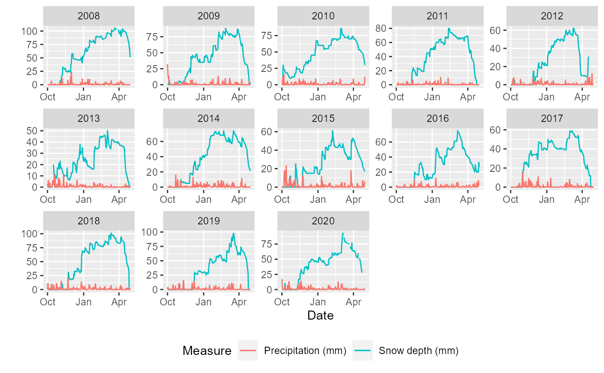
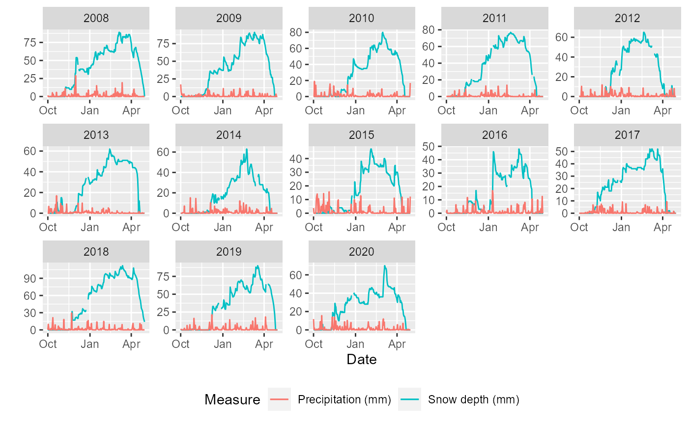

weather_tassasen.RdWinter weather data for Tassasen Sami reindeer herding district in Sweden. The dataset presents daily data for weather conditions from the winter 2008 to 2020. Winter here comprises from the beginning of October of the previous year to the last of Aril of the current year. A second dataset presents data for more weather stations in the region.
data(weather_tassasen) data(weather_tassasen_allstations)
A data frame with 7 variables:
date of the record
year of the record
snow depth in mm, measured in Myskelasen
snow depth in mm, measured in Dravagen
minimum daily temperature in degrees Celcius, measured in Dravagen
maximum daily temperature in degrees Celcius, measured in Dravagen
average daily temperature in degrees Celcius, measured in Dravagen
SMHI
library(ggplot2) data(weather_mittadalen) ggplot(weather_mittadalen, aes(date)) + facet_wrap(.~year, scales = "free", ncol = 5)+ geom_line(aes(y = snow_depth, color = "Snow depth (mm)")) + geom_line(aes(y = prec, color = "Precipitation (mm)")) + labs(x = "Date", y = "", color = "Measure") + theme(legend.position = "bottom")#> Warning: Removed 11 row(s) containing missing values (geom_path).data(weather_tassasen) ggplot(weather_tassasen, aes(date)) + facet_wrap(.~year, scales = "free", ncol = 5)+ geom_line(aes(y = snow_depth, color = "Snow depth (mm)")) + geom_line(aes(y = prec, color = "Precipitation (mm)")) + labs(x = "Date", y = "", color = "Measure") + theme(legend.position = "bottom")